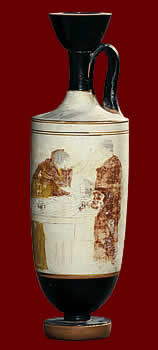

A tomb offeringWhite ground vases such as these were only used at funerals as a tomb offering. This one has a scene painted on the side of a body being laid out on a bier whilst women mourn. During the plague of Athens, so many people were ill and the number of dead so high, that people simply left bodies in the streets to rot. |